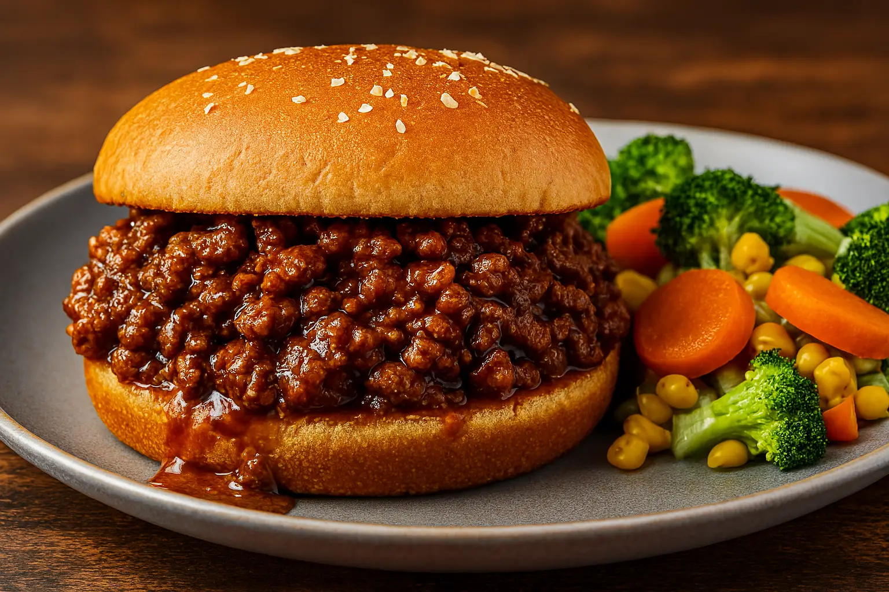

Sloppy Joes

Description:
A sloppy joe is a sandwich consisting of ground meat (typically beef), onions, tomato sauce or ketchup, Worcestershire sauce, and other seasonings served on a hamburger bun.
How to Make Sloppy Joes
You'll find the full, step-by-step recipe below — but here's a brief overview of what you can expect when you make these classic Sloppy Joes:
- Cook the beef, onion, and green pepper.
- Drain the liquids, then stir in the remaining ingredients.
- Simmer for about 30 minutes. Serve on hamburger buns.
What to Serve With Sloppy Joes
Recipe creator Tamara suggests serving these Sloppy Joe sandwiches with homemade sweet potato fries. They also pair well with all kinds of diner-style side dishes! For instance:
- Homemade Crispy Seasoned French Fries
- Homemade Mac and Cheese
- Refrigerator Dill Pickles
- Restaurant-Style House Salad
- Boston Baked Beans
Ingredients:
Original recipe (1X) yields 6 servings
- 1 pound lean ground beef
- ¼ cup chopped onion
- ¼ cup chopped green bell pepper
- ¾ cup ketchup, or to taste
- 1 tablespoon brown sugar, or to taste
- 1 teaspoon yellow mustard, or to taste
- ½ teaspoon garlic powder
- salt and ground black pepper to taste
- 6 hamburger buns, split
Steps:
- Heat a large skillet over medium heat. Cook and stir lean ground beef in the hot skillet until some of the fat starts to render, 3 to 4 minutes. Add onion and bell pepper; continue to cook until vegetables have softened and beef is cooked through, 3 to 5 more minutes.
- Stir in ketchup, brown sugar, mustard, and garlic powder; season with salt and pepper. Reduce heat to low and simmer for 20 to 30 minutes.
- Divide meat mixture evenly among hamburger buns.
Recipe Tip
If using ground beef with a higher fat content than lean, be sure to drain any fat before starting Step 2.
Home